AutoBook is an automotive service appointment system. Customers search open appointment slots offered by repair shops, book a slot, and manage or cancel their appointments. Providers (repair shops) publish and remove availability and see who booked with them. Administrators manage provider records and review all activity.
Milestone 1 delivered the requirements, the five-table relational schema, and a layered Spring Boot skeleton with two
read-only JSON endpoints (GET / and GET /slots). Milestone 2 turns that skeleton into a working,
secured, concurrent booking system with a real website. All Milestone 1 endpoints and tests are preserved.
| Requirement | Status | Where |
|---|---|---|
| Login for customer, provider, admin (BCrypt, sessions, logout) | Done, tested | SecurityConfig, DatabaseUserDetailsService |
| Role-based authorization, 401/403, CSRF, no impersonation | Done, tested | SecurityConfig, CurrentUserService |
| Browse/filter/paginate slots (SQL LIMIT/OFFSET) | Done, tested | SlotRepository, /browse, /api/slots |
| Customer booking workflow with confirmation | Done, tested | BookingService, customer pages |
| Concurrency: one winner, others 409, DB consistent | Done, tested | ConcurrentBookingIntegrationTests |
| Cancellation with ownership, history preserved, slot reusable | Done, tested | AppointmentService |
| Provider availability management | Done, tested | ProviderService, provider pages |
| Admin dashboard and provider management | Done, tested | AdminService, admin pages |
| Frontend (Thymeleaf + Bootstrap 5) | Done, tested | templates/, static/ |
| Centralized error handling | Done, tested | ApiExceptionHandler, WebModelAdvice |
| JDBC only (no JPA/Hibernate/ORM) | Done | All SQL in repository/ |
The application keeps the Milestone 1 layered architecture. Both the website and the JSON API go through the same services, so business rules and transactions are written once.
Browser (Thymeleaf pages) API client (curl / Postman / tests)
| |
controller/web/*PageController controller/*ApiController, HomeController, SlotController
\___________________ ____________/
\ /
Spring Security filter chain (session auth, roles, CSRF, 401/403)
|
service/ BookingService, AppointmentService, ProviderService, SlotService,
AdminService, CurrentUserService (@Transactional boundaries)
|
repository/ SlotRepository, AppointmentRepository, ProviderRepository,
UserRepository, ServiceRepository (JdbcTemplate + SQL)
|
H2 in-memory database (schema.sql, seed.sql)Frontend-to-backend flow for a booking: the browser submits the Thymeleaf form
POST /customer/book (with the hidden _csrf token) → Spring Security checks the session and
ROLE_CUSTOMER → CustomerPageController.book() resolves the customer from the session and calls
BookingService.book() → the service runs one transaction through SlotRepository and
AppointmentRepository → on success the controller redirects to the confirmation page; on a
BookingConflictException it redirects to /browse with a flash message. The JSON path
POST /api/appointments calls the same service method and returns 201 or a JSON error.
Tables: users, providers, services, availability_slots,
appointments (ER diagram in docs/diagrams/er-diagram.mmd). Milestone 2 changes:
providers.user_id (unique FK to users) links a repair shop to its login account, so a provider is
always derived from the signed-in user.UNIQUE(slot_id) on appointments was replaced. It blocked rebooking after a cancellation unless history
was deleted. It is now a generated column with a unique constraint:-- schema.sql (appointments)
slot_id BIGINT NOT NULL,
status VARCHAR(30) NOT NULL,
created_at TIMESTAMP NOT NULL DEFAULT CURRENT_TIMESTAMP,
-- Holds slot_id only while the appointment still occupies the slot (BOOKED or COMPLETED).
active_slot_id BIGINT GENERATED ALWAYS AS (
CASE WHEN status IN ('BOOKED', 'COMPLETED') THEN slot_id END
),
...
CONSTRAINT chk_appointments_status CHECK (status IN ('BOOKED', 'CANCELLED', 'COMPLETED')),
CONSTRAINT uq_appointments_active_slot UNIQUE (active_slot_id)A unique constraint allows any number of NULLs, so cancelled rows (active_slot_id = NULL) remain as history while
the database still forbids two active appointments for one slot. Other integrity rules kept from Milestone 1:
CHECK(end_time > start_time), UNIQUE(provider_id, start_time, end_time), role/status CHECKs, and all
foreign keys. Indexes were added for appointment lookups by user and provider and for the slot search.
Seed slot times are expressions relative to CURRENT_DATE (for example
DATEADD('MINUTE', 540, DATEADD('DAY', 1, CAST(CURRENT_DATE AS TIMESTAMP)))), so the demo always has upcoming slots.
Spring Security form login authenticates against the users table through the Milestone 1
DatabaseUserDetailsService (JDBC query SELECT email, password, role FROM users WHERE email = ?). Passwords are
BCrypt hashes verified by the BCryptPasswordEncoder bean. The session is stored server-side (JSESSIONID cookie).
A custom login page posts to /login; successful logins go to /dashboard, which redirects by role, or back to the
page originally requested. POST /logout invalidates the session.
// SecurityConfig.java
http.authorizeHttpRequests(auth -> auth
.requestMatchers("/", "/slots", "/login", "/browse", "/error", "/access-denied",
"/css/**", "/js/**", "/images/**", "/webjars/**", "/favicon.ico").permitAll()
.requestMatchers(HttpMethod.GET, "/api/slots", "/api/slots/*", "/api/providers", "/api/services", "/api/csrf").permitAll()
.requestMatchers("/customer/**", "/api/appointments/**").hasRole("CUSTOMER")
.requestMatchers("/provider/**", "/api/provider/**").hasRole("PROVIDER")
.requestMatchers("/admin/**", "/api/admin/**").hasRole("ADMIN")
.anyRequest().authenticated());
// API clients get JSON 401/403; browsers are redirected to /login or shown /access-denied.
http.exceptionHandling(exceptions -> exceptions
.defaultAuthenticationEntryPointFor((request, response, ex) -> writeJsonError(..., 401, ...), apiRequests)
.defaultAccessDeniedHandlerFor((request, response, ex) -> writeJsonError(..., 403, ...), apiRequests)
.defaultAuthenticationEntryPointFor(new LoginUrlAuthenticationEntryPoint("/login"), AnyRequestMatcher.INSTANCE)
.defaultAccessDeniedHandlerFor(browserAccessDeniedHandler(), AnyRequestMatcher.INSTANCE));URL rules decide which role may call an endpoint; the service layer decides which records a user may touch. No controller accepts a
user or provider id from the client. CurrentUserService always loads the user from the authenticated session, and
services compare ownership:
// AppointmentService.java
private void requireOwner(AppUser customer, AppointmentDto appointment) {
if (!appointment.customerId().equals(customer.userId())) {
throw new ForbiddenOperationException("You can only view or change your own appointments.");
}
}A test posts {"slotId":2,"userId":2} as Jada and verifies the appointment is still created for Jada (user 1).
CSRF protection stays enabled for all state-changing requests: Thymeleaf forms include the token automatically, and API clients
fetch it from GET /api/csrf and send it in the X-CSRF-TOKEN header.
/browse. SlotRepository.searchAvailableSlots builds a parameterized query
(is_available = TRUE AND start_time > now, plus optional provider, service, date filters), ordered by
start_time, with LIMIT ? OFFSET ?. A matching COUNT(*) gives the total for pagination./customer/book/{slotId} (review page with service, duration, provider, date, time).BookingService.book() runs the transaction shown below./customer/appointments/{id}/confirmation (confirmation number AB-00005, for example).// BookingService.java
@Transactional(isolation = Isolation.READ_COMMITTED)
public AppointmentDto book(AppUser customer, BookingRequest request) {
if (customer.role() != UserRole.CUSTOMER) { throw new ForbiddenOperationException(...); }
long slotId = request.slotId();
LocalDateTime now = LocalDateTime.now(clock);
try {
// Critical section starts here: the row lock is held until the transaction ends.
SlotLock slot = slotRepository.lockById(slotId)
.orElseThrow(() -> new ResourceNotFoundException("Appointment slot " + slotId + " was not found."));
if (request.serviceId() != null && !request.serviceId().equals(slot.serviceId())) {
throw new InvalidRequestException("The selected service does not match this appointment slot.");
}
if (!slot.startTime().isAfter(now)) {
throw new InvalidRequestException("This appointment slot has already started and can no longer be booked.");
}
if (!slot.available()) {
throw new BookingConflictException("Sorry, this appointment slot has already been booked.");
}
if (slotRepository.claimIfAvailable(slotId, now) != 1) {
throw new BookingConflictException("Sorry, this appointment slot has already been booked.");
}
long appointmentId = appointmentRepository.insert(
customer.userId(), slot.providerId(), slot.serviceId(), slotId, AppointmentStatus.BOOKED, now);
return appointmentRepository.findById(appointmentId).orElseThrow();
} catch (DuplicateKeyException | ConcurrencyFailureException ex) {
// Last line of defence: the database constraint or lock manager rejected a competing booking.
throw new BookingConflictException("Sorry, this appointment slot has already been booked.");
}
}-- SlotRepository.lockById (pessimistic row lock)
SELECT slot_id, provider_id, service_id, start_time, end_time, is_available
FROM availability_slots WHERE slot_id = ? FOR UPDATE
-- SlotRepository.claimIfAvailable (atomic conditional update; 0 rows = someone else won)
UPDATE availability_slots SET is_available = FALSE
WHERE slot_id = ? AND is_available = TRUE AND start_time > ?
-- AppointmentRepository.insert
INSERT INTO appointments (user_id, provider_id, service_id, slot_id, status, created_at) VALUES (?, ?, ?, ?, ?, ?)| Outcome | HTTP (API) | Website |
|---|---|---|
| Booked | 201 Created + Location | Confirmation page |
| Slot does not exist | 404 | Not-found page |
| Slot in the past / service mismatch / invalid body | 400 | Message on slot list |
| Slot already booked / lost the race | 409 | "Sorry, this appointment slot has already been booked." |
| Not signed in / wrong role / no CSRF token | 401 / 403 / 403 | Login redirect / access-denied page |
// AppointmentService.cancel (condensed; same lock order as booking: slot row first, then appointment row)
@Transactional(isolation = Isolation.READ_COMMITTED)
public AppointmentDto cancel(AppUser customer, long appointmentId) {
AppointmentDto appointment = appointmentRepository.findById(appointmentId).orElseThrow(...);
requireOwner(customer, appointment); // 403 for someone else's
SlotLock slot = slotRepository.lockById(appointment.slotId()).orElseThrow(...);
AppointmentStatus currentStatus = appointmentRepository.lockStatusById(appointmentId).orElseThrow(...);
if (currentStatus != AppointmentStatus.BOOKED) { throw new BookingConflictException(...); } // 409
if (!slot.startTime().isAfter(LocalDateTime.now(clock))) { throw new InvalidRequestException(...); } // 400
if (appointmentRepository.updateStatus(appointmentId, BOOKED, CANCELLED) != 1) { throw new BookingConflictException(...); }
slotRepository.reopen(appointment.slotId()); // slot can be booked again
return appointmentRepository.findById(appointmentId).orElseThrow();
}GET /customer/appointments (and GET /api/appointments/me) splits a customer's rows into
upcoming (BOOKED and in the future) and history (past, CANCELLED, COMPLETED). Only the customer's own rows are queried
(WHERE appointment.user_id = ?).
ProviderService resolves the provider from the signed-in account (providers.user_id). Creating a slot validates
start < end, a future start, at most 8 hours, an existing service, and a length of at least the service's duration. It then locks
the provider row and checks for overlaps:
// ProviderService.createSlot
providerRepository.lockProvider(provider.providerId()); // SELECT provider_id FROM providers WHERE provider_id = ? FOR UPDATE
if (slotRepository.countOverlapping(provider.providerId(), start, end) > 0) {
throw new BookingConflictException("This time overlaps another slot on your schedule."); // 409
}
long slotId = slotRepository.insert(provider.providerId(), service.serviceId(), start, end);
-- SlotRepository.countOverlapping: half-open intervals, so back-to-back slots are allowed
SELECT COUNT(*) FROM availability_slots WHERE provider_id = ? AND start_time < ? AND end_time > ?Locking the provider row closes a phantom-read gap: without it, two simultaneous requests could both count zero overlaps and both
insert. Removing a slot locks the slot row (so a customer cannot book it mid-removal), returns 403 if the slot belongs to another
provider and 409 if it is booked. A slot with cancelled-appointment history is closed (is_available = FALSE) instead of deleted,
which keeps the foreign keys and history intact.
All screenshots were captured from the running application (java -jar target/Autobook-0.0.1-SNAPSHOT.jar) with headless
Chrome, using the real login form and seed data. All 19 images are in docs/screenshots/.
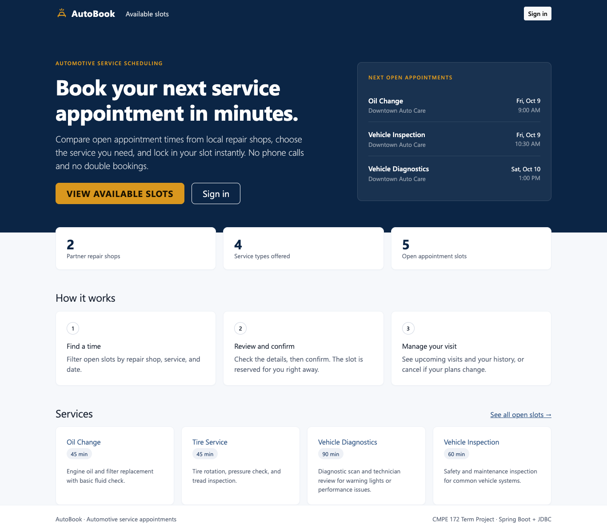
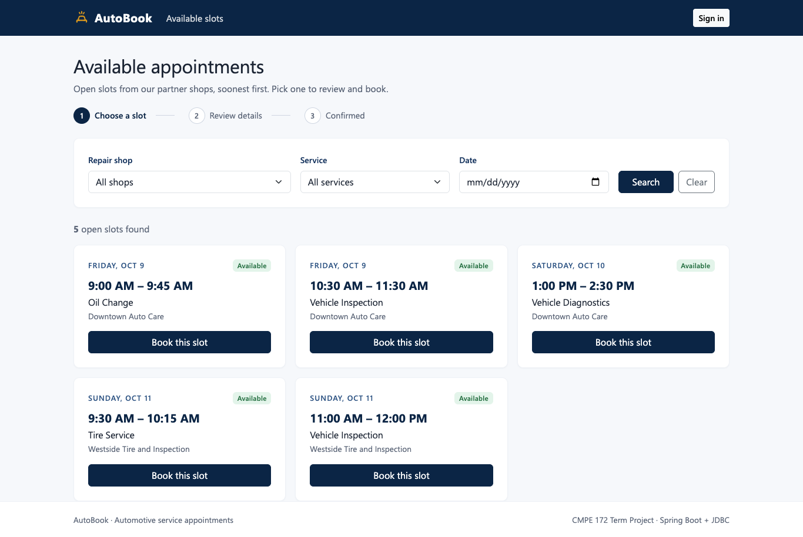
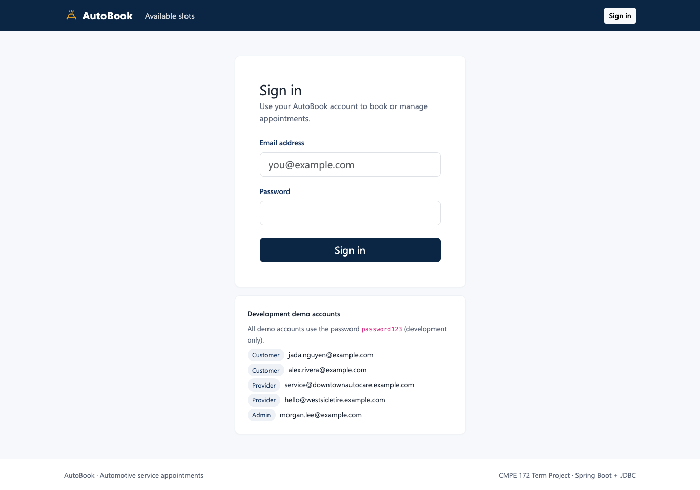
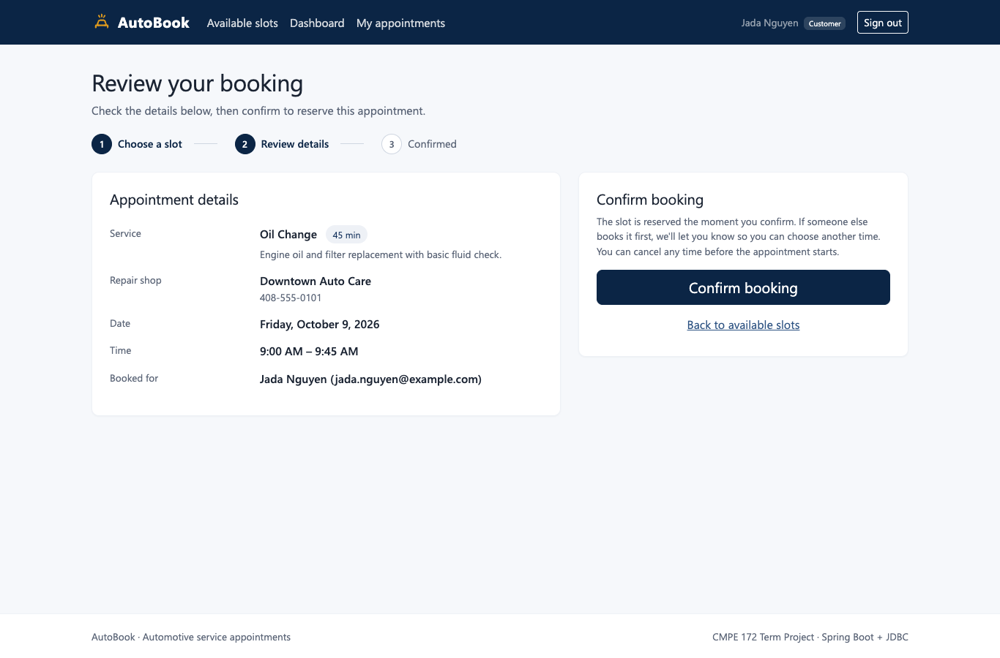
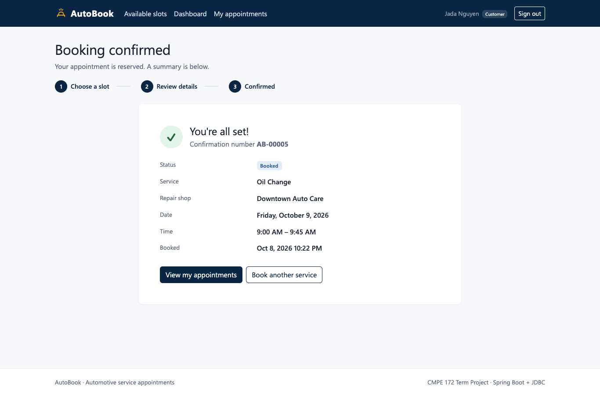
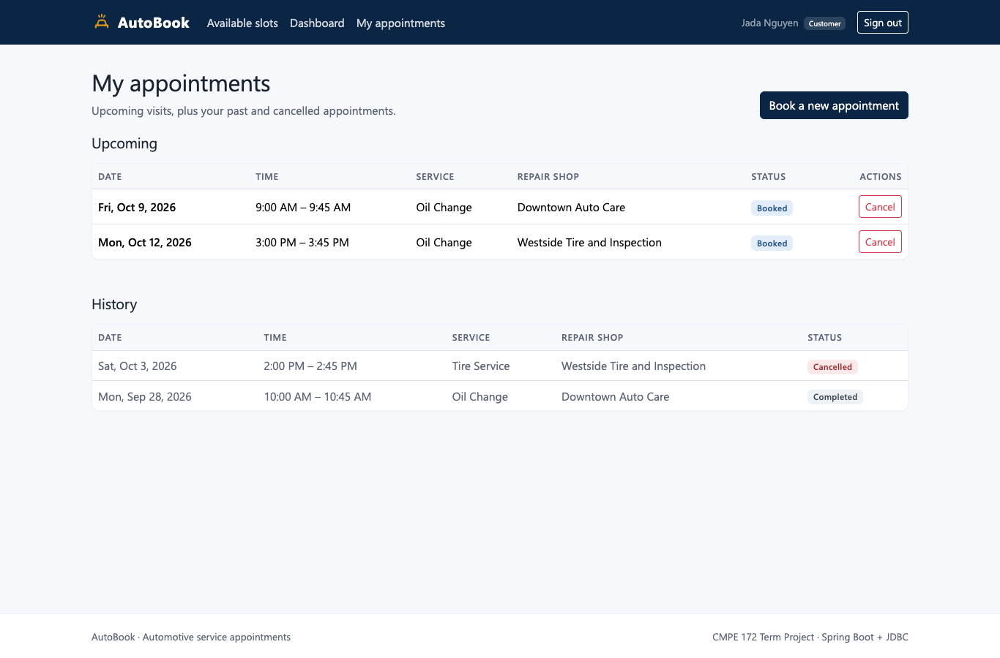
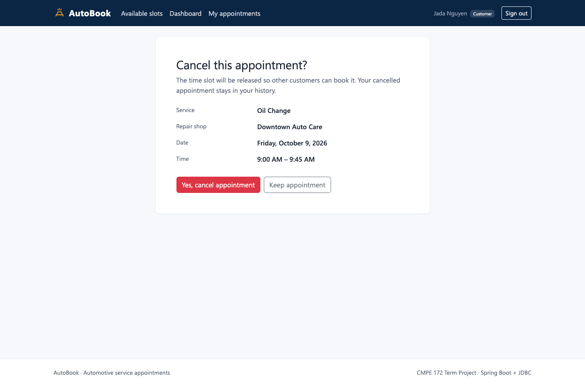
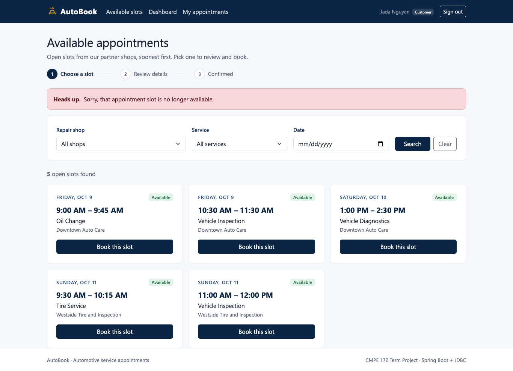
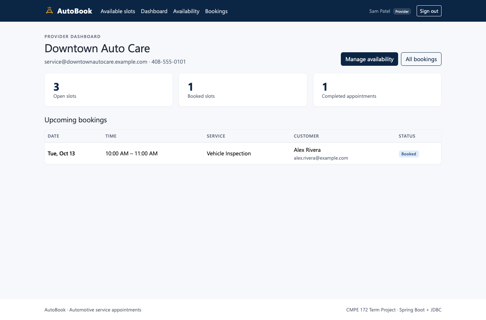
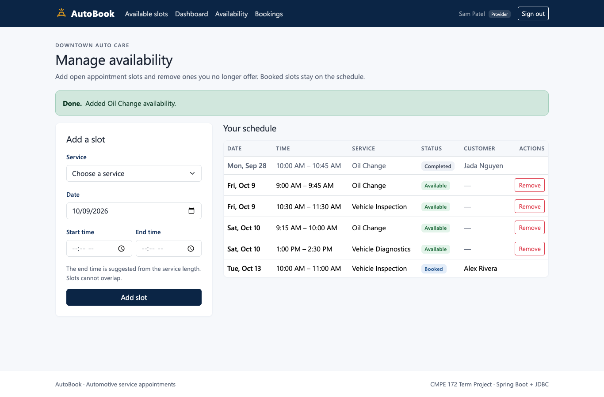
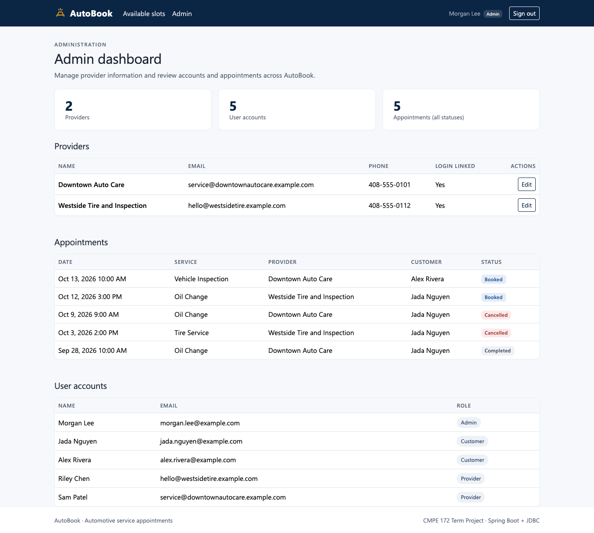
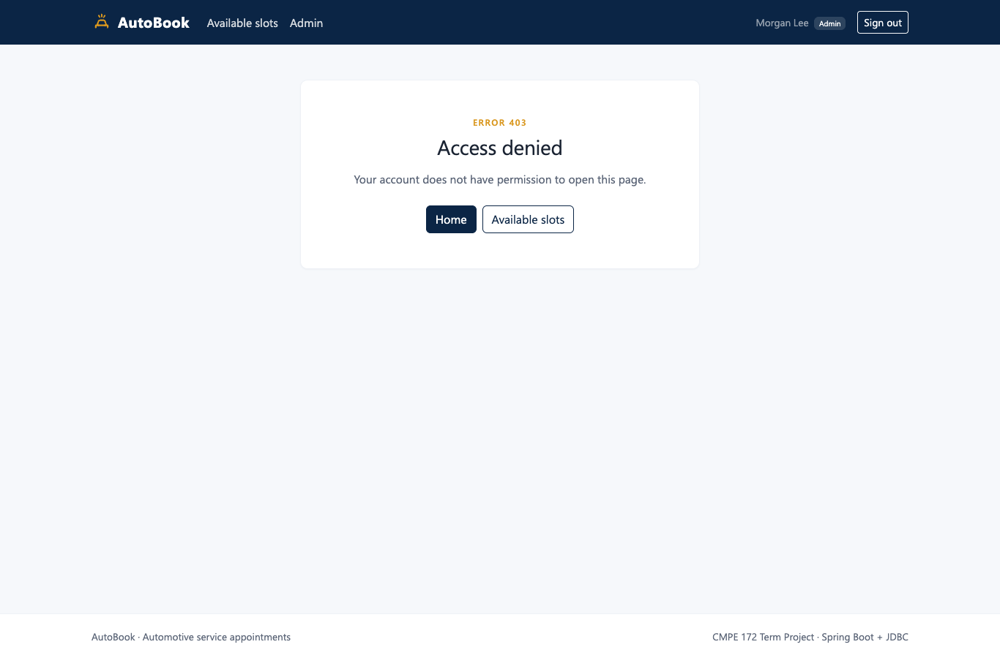
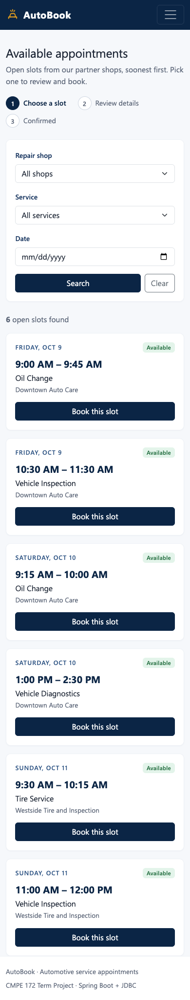
A race condition occurs when the result depends on how concurrent operations interleave. A naive booking does check-then-act:
T1: SELECT is_available FROM availability_slots WHERE slot_id = 7 -- TRUE
T2: SELECT is_available FROM availability_slots WHERE slot_id = 7 -- TRUE (T1 has not written yet)
T1: UPDATE ... SET is_available = FALSE; INSERT appointment (customer A); COMMIT
T2: UPDATE ... SET is_available = FALSE; INSERT appointment (customer B); COMMIT -- double bookingThe critical section is everything from reading the slot's availability to inserting the appointment. It must
run as one indivisible unit per slot. A Java synchronized block is not enough: it only protects one JVM, does not cover
other application instances or direct database access, and does not roll back partial work on failure. AutoBook therefore enforces
mutual exclusion in the database.
Every state-changing service method is annotated @Transactional. Spring Boot's auto-configured
JdbcTransactionManager (a DataSourceTransactionManager for JDBC) binds one JDBC connection to the thread for the whole method, turns off
auto-commit, commits when the method returns, and rolls back when it throws a runtime exception. All the JdbcTemplate
calls inside a service method share that connection and transaction. Domain exceptions (BookingConflictException,
InvalidRequestException, ...) are unchecked, so any validation failure after the lock was taken also rolls back cleanly.
| Method | Transaction contents |
|---|---|
BookingService.book | lock slot → validate → conditional UPDATE slot → INSERT appointment |
AppointmentService.cancel | lock slot → lock appointment → conditional UPDATE status → reopen slot |
ProviderService.createSlot | lock provider → overlap check → INSERT slot |
ProviderService.removeSlot | lock slot → booked check → DELETE or close slot |
ProviderService.completeAppointment, AdminService.updateProvider | conditional UPDATE |
Booking and cancellation declare @Transactional(isolation = Isolation.READ_COMMITTED), which is also H2's default.
READ COMMITTED prevents dirty reads (a transaction never sees another's uncommitted booking). On its own it still allows
non-repeatable reads and lost updates, the check-then-act problem above. AutoBook closes that gap with explicit row locks
instead of raising the isolation level:
| Strategy | Used? | Reason |
|---|---|---|
Pessimistic locking (SELECT ... FOR UPDATE) | Yes | Serializes all transactions that touch the same slot. Simple to reason about, and lock waits are short because the critical section is a few statements. |
Atomic conditional update (UPDATE ... WHERE is_available = TRUE) | Yes | Exactly one transaction can flip the flag; the affected row count tells the loser it lost. |
Database uniqueness constraint (uq_appointments_active_slot) | Yes | Final invariant enforced by the DBMS even if code is bypassed. |
| Optimistic version column | No | Would need a version column and client-side retries. Under contention for a popular slot most attempts would fail and retry. A row lock gives the same safety with a clearer flow. |
| SERIALIZABLE isolation | No | Stronger than needed and more abort-prone; the targeted locks give the required guarantee at READ COMMITTED. |
Lock ordering: booking and cancellation both lock the slot row before the appointment row, so they cannot deadlock.
Lock timeout: the datasource URL sets LOCK_TIMEOUT=10000, so a waiting transaction blocks for at most 10 s.
AutoBook does not retry automatically. A transaction that loses the race is not a transient failure: the slot really is taken, so
retrying would only fail again. The loser receives 409 Conflict ("Sorry, this appointment slot has already been booked."), and the
website sends the customer back to the slot list to choose another time. If a lock cannot be acquired within the timeout, H2 raises
a lock-timeout error. Spring translates it into a ConcurrencyFailureException, and the service also maps that to 409, so
the client can safely try again.
uq_appointments_active_slot)
are never violated. The invariant "a slot is unavailable exactly when it has an active appointment (or was closed by its
provider)" is maintained by changing both tables in one transaction.FOR UPDATE row locks make competing bookings for one slot behave as if
they ran one after another. Bookings for different slots do not block each other.ConcurrentBookingIntegrationTests starts the application on a random port with its own in-memory database
(autobook_concurrency), so it can commit real transactions without affecting other tests. A CountDownLatch
releases all threads at the same instant, and every Future.get has a bounded timeout (20 s, plus a 30 s JUnit
@Timeout) so a deadlock could never hang the build.
@Test
@Timeout(value = 30, unit = TimeUnit.SECONDS)
void twoCustomersBookingTheSameSlotOverHttpGetOneSuccessAndOneConflict() throws Exception {
long slotId = createFutureSlot(5);
HttpClient jada = loggedInClient("jada.nguyen@example.com"); // real login form + CSRF token
HttpClient alex = loggedInClient("alex.rivera@example.com");
List<Callable<Integer>> attempts = List.of(
() -> postBooking(jada, slotId),
() -> postBooking(alex, slotId));
List<Integer> statuses = runSimultaneously(attempts);
assertEquals(1, statuses.stream().filter(code -> code == 201).count(), "exactly one booking succeeds: " + statuses);
assertEquals(1, statuses.stream().filter(code -> code == 409).count(), "exactly one booking conflicts: " + statuses);
assertConsistent(slotId); // exactly one BOOKED appointment, slot.is_available = FALSE
}| Test | Scenario | Assertions | Result |
|---|---|---|---|
twoCustomersBookingTheSameSlotOverHttp... | 2 logged-in customers POST the same slot simultaneously over HTTP | one 201, one 409, one active appointment, slot unavailable | Pass |
manyConcurrentBookingAttemptsProduceExactlyOneAppointment | 12 customers call BookingService.book on one slot at once | 1 success, 11 conflicts, one active appointment | Pass |
simultaneousCancelAndRebookLeaveSlotConsistent | owner cancels while another customer rebooks | either rebooked (1 active, unavailable) or rejected (0 active, available) | Pass |
The concurrency class passed in 5 consecutive repeated runs during development. The application log showed that the losing
requests were rejected at the row-lock/availability check (the second transaction waited on FOR UPDATE, then saw the
slot was taken), so the unique-constraint fallback was not needed in those runs.
ApiExceptionHandler (@RestControllerAdvice for JSON controllers) maps exceptions to a consistent body
{timestamp, status, error, message, path}:
| Status | Cause |
|---|---|
| 400 | InvalidRequestException, bean-validation failures, malformed JSON, bad parameter types |
| 401 | Unauthenticated /api/** request (security entry point) |
| 403 | Wrong role, missing CSRF token, or ForbiddenOperationException (not the owner) |
| 404 | ResourceNotFoundException |
| 409 | BookingConflictException, DataIntegrityViolationException, ConcurrencyFailureException |
| 500 | Anything else; logged on the server, generic message to the client |
For the website, WebModelAdvice renders the same cases as friendly pages or flash messages. No SQL, exception class
names, or stack traces are ever shown to users.
Command: ./mvnw clean test. Final result: 85 tests run, 0 failures, 0 errors, 0 skipped
(BUILD SUCCESS). All test classes are Spring Boot integration tests against the real H2 schema. MockMvc tests use
@Transactional so each test rolls back; the concurrency tests use a separate database.
| Test class | Tests | Covers |
|---|---|---|
| AutobookApplicationTests (Milestone 1) | 5 | context, seed data, /, /slots, DB duplicate rejection |
| SecurityIntegrationTests | 17 | login per role, wrong password/unknown email, 401 JSON, login redirect, cross-role 403, CSRF, logout |
| SlotSearchIntegrationTests | 7 | future/available only, sorting, provider/service/date filters, LIMIT/OFFSET pages, invalid params |
| BookingIntegrationTests | 11 | success, impersonation ignored, 404, unavailable 409, past 400, service mismatch, validation, duplicate 409, 401, provider 403, CSRF |
| ConcurrentBookingIntegrationTests | 3 | two-customer HTTP race, 12-thread race, cancel vs. rebook |
| CancellationIntegrationTests | 9 | history split, ownership 403, cancel + reopen, rebooking, status rules, DB constraint |
| ProviderAvailabilityIntegrationTests | 12 | schedule view, create, invalid ranges, overlap 409, removal, ownership, close-with-history, complete |
| CustomerWebPageIntegrationTests | 10 | home HTML vs. JSON, login page, browse, booking/cancel through pages, friendly errors, 403 pages |
| ProviderWebPageIntegrationTests | 6 | provider dashboard, add-slot form, validation messages, removal |
| AdminIntegrationTests | 5 | admin dashboard, admin APIs, provider edit + validation, provider blocked from admin |
CURRENT_DATE.UNIQUE(slot_id). Keeping cancelled history while allowing a new booking was impossible
with a plain unique column. H2 has no partial indexes, so a generated active_slot_id column with a unique constraint
expresses "unique among active appointments".GET / uses content negotiation:
a text/html handler serves browsers, and the original produces-less handler still serves JSON clients and the
Milestone 1 test./api/** gets 401/403 JSON while pages redirect to login.Milestone 2 delivers a secured, role-aware AutoBook with a complete customer booking flow, cancellation with preserved history, provider schedule management, an admin view, and a responsive website, all on Spring Boot with plain JDBC. Double booking is prevented by a transaction that combines a pessimistic row lock, an atomic conditional update, and a database uniqueness constraint. Integration tests that race real HTTP sessions and twelve concurrent threads against the same slot confirm it. The full suite of 85 tests passes. Remaining work for later milestones includes persistent storage, notifications, and the AI agent and RAG features from the original proposal.